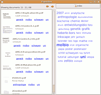

Tracker
Dieser Artikel wurde für die folgenden Ubuntu-Versionen getestet:
Ubuntu 16.04 Xenial Xerus
Ubuntu 14.04 Trusty Tahr
Zum Verständnis dieses Artikels sind folgende Seiten hilfreich:
Tracker  ist eine Desktopsuche zum schnellen Auffinden von Dateien. Es durchsucht Dateien, Bilder, Videos, Musik, Textdateien, E-Mails und Chat-Logs sowie Quellcode.
ist eine Desktopsuche zum schnellen Auffinden von Dateien. Es durchsucht Dateien, Bilder, Videos, Musik, Textdateien, E-Mails und Chat-Logs sowie Quellcode.
Der höchst effiziente Suchdienst läuft im Hintergrund, um die Meta-Daten in einem - immer aktuell gehaltenen - Index zu speichern. Die Suche selbst kann über ein grafisches Abfragewerkzeug, die Integration in Nautilus, mit einem Suchprogramm wie Catfish oder über die Kommandozeile erfolgen.
Installation¶
Das Programm kann man über die folgenden Pakete installieren [1]:
tracker (universe, Hintergrunddienst)
 mit apturl
mit apturl
Paketliste zum Kopieren:
sudo apt-get install tracker
sudo aptitude install tracker
Konfiguration¶
Tracker kann bequem über eine graphische Oberfläche konfiguriert werden. Diese findet man bei Ubuntu-Varianten mit einem Anwendungsmenü unter "Einstellungen -> Suche und Indizierung". Bei Ubuntu 16.04 ist erst eine Neuanmeldung erforderlich. Unter Dash "Suche und Indizierung" eingeben. Hier können verschiedene Einstellungen vorgenommen werden. Unter "Allgemein" und "Leistung" findet man viele Einstellungen, die den Ressourcenverbrauch des Suchindexes betreffen. Unter "Dateien" und "Ignorierte Dateien" kann man definieren, welche Ordner und Dateien in den Index aufgenommen bzw. ignoriert werden sollen.
Alternativ kann die Konfiguration über den Befehl
gsettings list-recursively | grep -i org.freedesktop.Tracker | sort | uniq
angezeigt werden. Mit dem dconf.editor (nicht: gconf) kann man sie bearbeiten.
Suche¶
Ist Tracker nun passend konfiguriert, so wird der Dienst automatisch nach der grafischen Anmeldung gestartet und dadurch der Suchindex automatisch aufgebaut und aktualisiert. Die Suche selber erfolgt über verschiedene Oberflächen.
Tracker Suche¶
Tracker bringt eine grafische Oberfläche mit, über die sich der Index von Tracker durchsuchen lässt.
tracker-gui (universe, ab Ubuntu 11.04)
mit apturl
Paketliste zum Kopieren:
sudo apt-get install tracker-gui
sudo aptitude install tracker-gui
Man findet sie bei Ubuntu-Varianten mit einem Anwendungsmenü unter "Zubehör -> Tracker Suche" bzw. "Zubehör -> Desktop Suche". Nach dem Start kann man unter "Suchen" die gewünschten Suchbegriffe eintragen. In aktuellen Versionen von Tracker sieht man die Ergebnisse nach Kategorien aufgeschlüsselt in einer übersichtlichen Liste. Weitere Einstellungen sind hier nicht möglich.
Nautilus¶
 Die Suche nach Dokumenten ist direkt in den Dateimanager Nautilus der Desktop-Umgebung GNOME integriert. Über die Schaltfläche oder die Tastenkombination
Strg +
F wird die Suchleiste eingeblendet.
Die Suche nach Dokumenten ist direkt in den Dateimanager Nautilus der Desktop-Umgebung GNOME integriert. Über die Schaltfläche oder die Tastenkombination
Strg +
F wird die Suchleiste eingeblendet.
Hier können nun die gewünschten Suchbegriffe eingegeben werden. Nautilus durchsucht nun automatisch den Suchindex von Tracker sowie das Dateisystem nach Dateien bzw. Ordner, die die Suchbegriffe im Namen tragen.
Catfish¶
Catfish ist ein grafisches Frontend für verschiedene Suchdienste. Das Programm gestattet es schnell und unkompliziert auf der Festplatte nach Dateien und Ordnern zu suchen. Neben verschiedenen anderen Suchdiensten kann es auch die Suche von Tracker benutzen.
Terminal¶
Auch auf der Kommandozeile kann man den Suchindex durchsuchen. Die Suche muss man jedoch zuerst über das folgende Paket installieren (bei Ubuntu 16.04 ist die Installation überflüssig, da tracker-search bereits im Paket tracker enthalten ist):
tracker-utils (universe, nur bis einschließlich Ubuntu 14.04)
mit apturl
Paketliste zum Kopieren:
sudo apt-get install tracker-utils
sudo aptitude install tracker-utils
Danach kann man in einem Terminal [2] eine Suche starten:
tracker-search stichwort1 stichwort2
Die Ergebnisse werden Zeile für Zeile ausgegeben.
Schlagworte¶
Neben der Extraktion und Indizierung von Meta-Daten aus Dateien unterstützt Tracker auch das "taggen" von einzelnen Dateien und Ordnern. Hierbei vergibt man einer Reihe zusammengehörender Dateien einen oder mehrere gemeinsame Schlagwörter (engl. Tag), um die Dateien später über das gemeinsame Schlagwort schnell wiederzufinden.
Reizt man diese Möglichkeit vollständig aus, kann die gesamte Datensammlung mit Schlagworten versehen werden und die Suche nach Dateien allein über diese gemeinsamen Begriffe erfolgen. Manche Benutzer kennen diese Art der Indizierung anhand einer Schlagwortwolke vielleicht schon von diversen Fotoservices wie z.B. Flickr .
tracker-tag¶
Für das Taggen von Dateien stellt Tracker das Werkzeug tracker-tag zu Verfügung. Dieses textbasierte Programm ermöglicht das Setzen, Entfernen, Suchen und Auflisten von Schlagworten. Mit folgendem Befehl [2] ließen sich bspw. der Bilddatei IMG_1234.jpg eindeutige Schlagworte (foto,2008,max,geburtstag) zuweisen, um es später in der Bildersammlung wiederzufinden:
tracker-tag --add=foto --add=2008 --add=max --add=geburtstag /media/bilder/IMG_1234.jpg
Nautilus-Erweiterung¶
Mittlerweile gibt es eine Erweiterung für Nautilus, die den Zugriff auf die Tags direkt über den Eigenschaften-Dialog der jeweiligen Datei ermöglicht. Um diese Erweiterungen zu nutzen, müssen folgende Abhängigkeiten installiert [1] sein:
python-dev
python-nautilus (universe)
mit apturl
Paketliste zum Kopieren:
sudo apt-get install python-dev python-nautilus
sudo aptitude install python-dev python-nautilus
Nun muss die Datei tracker-tags-tab.py  heruntergeladen und im Ordner ~/.nautilus/python-extensions/ gespeichert werden (der Ordner muss ggf. zuvor angelegt werden). Nach einem Neustart von Nautilus steht nun ein weiterer Reiter im Eigenschaftsdialog zur Verfügung.
heruntergeladen und im Ordner ~/.nautilus/python-extensions/ gespeichert werden (der Ordner muss ggf. zuvor angelegt werden). Nach einem Neustart von Nautilus steht nun ein weiterer Reiter im Eigenschaftsdialog zur Verfügung.

PaperBox¶
PaperBox ist ein älteres Projekt für den GNOME-Desktop, das es erlaubt, (Text-)Dokumente einzulesen, mit Schlagworten (Tags) zu versehen und über eine TagCloud in den Dokumenten zu stöbern und zu suchen. Große Dokumentensammlungen können so, parallel zu einer eventuell existierenden Ordnerstruktur, leicht überblickt werden, wenn man mal nicht genau weiß, wo man suchen muss.
Manuelle Installation¶
Von der Projektseite lädt man sich das Quellcode-Archiv herunter, entpackt es [5] und wechselt in einem Terminal in das erstellte Verzeichnis [2]. Als Voraussetzung für die erfolgreiche Kompilierung des Programms müssen noch folgende Pakete installiert werden:
intltool
libgtkmm-2.4-dev
libglademm-2.4-dev
libgtkmm-utils-dev (universe)
libgnomeui-dev
libgoocanvas-dev
libdbus-glib-1-dev
libtrackerclient-dev
mit apturl
Paketliste zum Kopieren:
sudo apt-get install intltool libgtkmm-2.4-dev libglademm-2.4-dev libgtkmm-utils-dev libgnomeui-dev libgoocanvas-dev libdbus-glib-1-dev libtrackerclient-dev
sudo aptitude install intltool libgtkmm-2.4-dev libglademm-2.4-dev libgtkmm-utils-dev libgnomeui-dev libgoocanvas-dev libdbus-glib-1-dev libtrackerclient-dev
Anschließend kann man PaperBox kompilieren und installieren [6].
Hinweis!
Fremdsoftware kann das System gefährden.
Problembehebung¶
Indizierung bricht unvollständig ab¶
Falls die Indizierung mit folgender Fehlermeldung abbricht:
"Tracker - There was an error while performing indexing: Index corrupted"
sollte man den Index löschen und komplett neu generieren lassen. Dazu wird das Paket tracker-utils benötigt. Die Neuerstellung lässt sich mit folgendem Befehl anstoßen:
tracker-control -r
Dies führt dazu, dass alle Tracker-Prozesse des aktuellen Benutzers beendet werden und die aktuellen Index-Daten gelöscht werden. Nach einer erneuten Anmeldung läuft der Tracker-Indexer wieder.
Indexer läuft nicht¶
Um zu überprüfen, ob der Indexer (Crawler) läuft, benutzt man den Befehl:
tracker-control
Sollte der Indexer nicht laufen, kann er mit
tracker-control -s
gestartet werden. Jetzt sollte auch die Datei-Indexierung laufen.
Datensicherung¶
Wie oben bereits erwähnt, ist die Konfiguration in der Datei ~/.config/tracker/tracker.cfg abgespeichert. Bei einem Backup sollte man daneben auch die Verzeichnisse ~/.cache/tracker und ~/.local/share/tracker/data einbeziehen (siehe auch Forumsbeitrag und Tracker-Dokumentation ).
 Übersichtsartikel
Übersichtsartikel- Erstellt mit Inyoka
-
 2004 – 2017 ubuntuusers.de • Einige Rechte vorbehalten
2004 – 2017 ubuntuusers.de • Einige Rechte vorbehalten
Lizenz • Kontakt • Datenschutz • Impressum • Serverstatus -
Serverhousing gespendet von